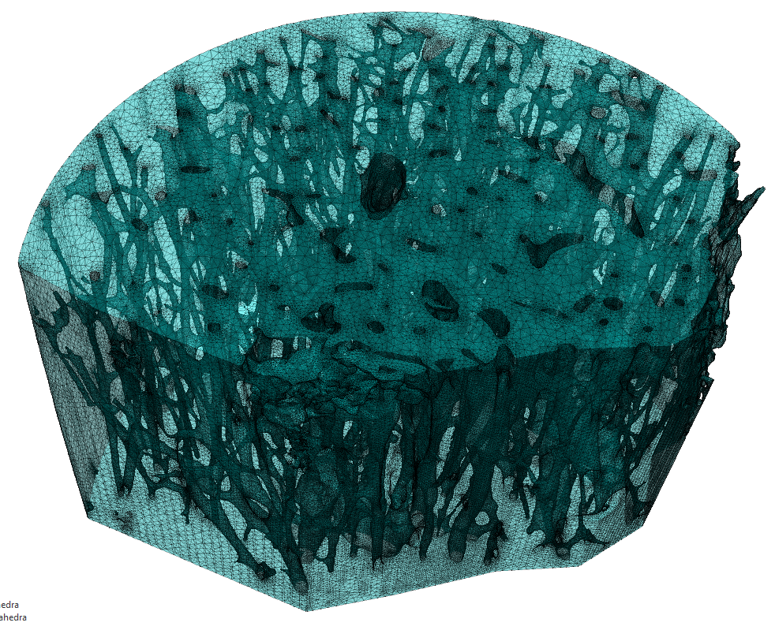
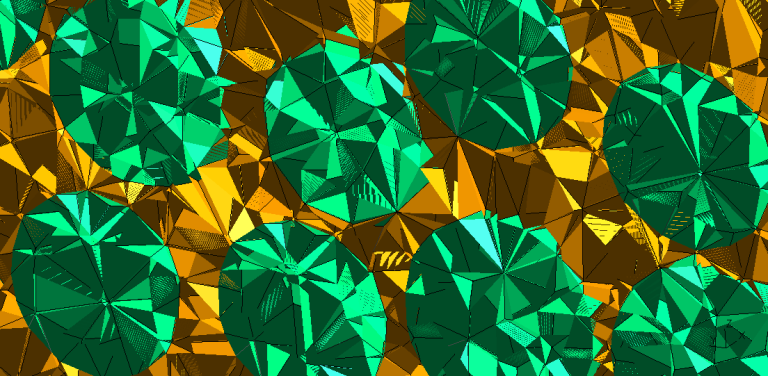
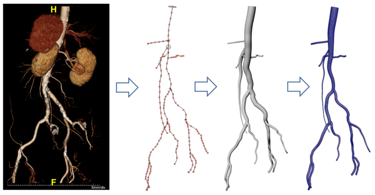

Projects spanning the intersection of computational mechanics, bioengineering, and mathematics.
At the University of Illinois, I worked in the Tissue Biomechanics Laboratory with Professor Mariana Kersh. Bone is a complex hierarchical material that can be studied at many levels. For diseases like osteoporosis, characterized by bone loss, macro-level tests like DEXA scanning can predict an increased fracture risk, but cannot detect the driving mechanism.As a porous, anisotropic material, one of the only ways to truly predict bone mechanics is to model the underlying microstructure. The complexity of the porous structure of cortical bone presents a challenge when generating computational models requiring high resolution imaging, advanced mesh generation algorithms, and powerful computational resources for finite element analysis.
Samples of cortical bone were collected from the middle neck of a cadaver femur. The neck was separated into four quadrants: anterior, posterior, superior, and inferior then further sub-sectioned to 5 mm pieces. Micro-computed tomography scans were collected (4 μm/voxel), processed, and used to generate 3D models of the bone and of the porous network. Effective strain in each model was derived through finite element analysis (Abaqus) using physiologic displacement boundary conditions and Young’s modulus estimation using density calibrations from hydroxyapatite phantoms. Two- and three-dimensional geometric measures were evaluated from the processed images using a combination of MATLAB, FIJI, and Amira.
My thesis is available here.
In between my undergraduate and graduate studies, I interned for Illinois Rocstar. While there, I developed PacMesh and ultimately presented my work at the Advanced Computational Methods in Engineering Conference (ACOMEN) in October 2017. I devised a computational framework to (i) generate random packs of convex inclusions, (ii) obtain accurate geometric representations for the pack, and (iii) create a high-quality conformal mesh. This approach was innovative because of its simplicity, ease of automation, and potential to account for uncertainties such as the effect of a material’s microstructure.
This project involved taking the output from previous Rocstar code, Rocpack, and generated solid models and finite element meshes for multiple projects. Rocpack used a variation of the Lubachevsky-Stillinger algorithm with collision detection to produce polydisperse random distributions and orientations of particles. The framework generates packs from a number of inclusion shapes into one of four different geometric domains. Several pre-processing options were developed such as the ability to enforce periodic boundary conditions, take a 2D cross-section, and manipulate particles.
The abstract for ACOMEN 2017 can be found here.
I was a Blue Waters Student Intern in from May 2016 – May 2017. This position involved a 2 week-long intensive training session on parallel computing. We then got an allocation to perform research with our selected advisor. I worked with Professor Arif Masud in the Civil Engineering department at UIUC. My job was to generate a 3D model of the aorta and descending arteries. Once this procedure was developed, I helped run models of blood flow through the geometry on the Blue Waters supercomputer. After the internship was over, I continued working on the project to help extend it to fluid-solid interactions so that we could model different physiologic conditions.
A preliminary report of this work was published in the 2017 Blue Waters Annual Report.